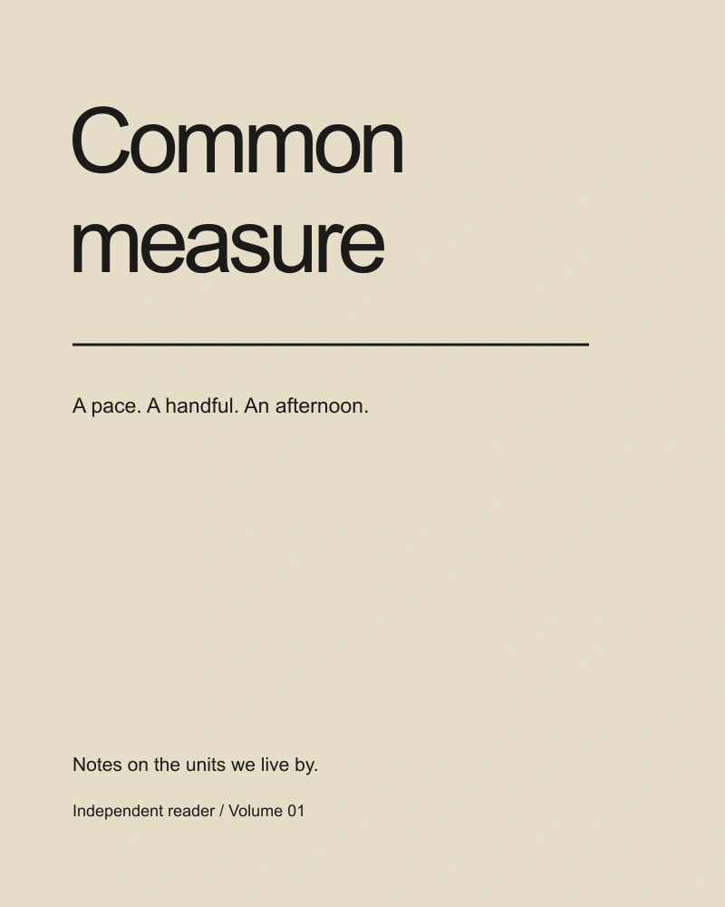
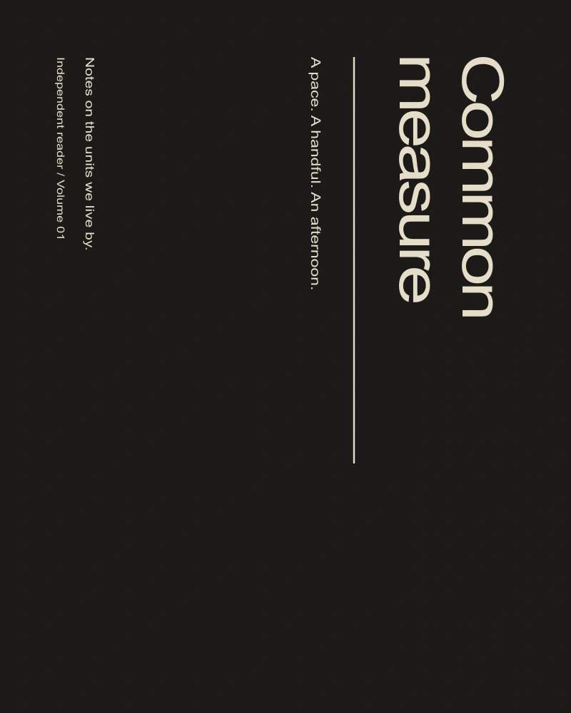

The starting point
Common measure is a fictional reader about the units people use without thinking: a pace, a handful, a page, an afternoon. The project studies how a book can move between precise notation and less precise human language.
A graphic decision
I set a stable running measure and allowed the chapter titles to interrupt it. The interruptions are occasional and purposeful. They mark a change in scale, from the body to the room to the city, without requiring a different graphic language for every chapter.
A system, in use
The cover uses a long rule that stops before the edge of the sheet. Inside, the same rule becomes a separator between a definition and an example. A device introduced on the outside therefore has a job to do in the reading experience.
At reading distance
Page numbers are placed near the text rather than at the far corner. This makes them useful during a discussion, when someone is looking for a passage rather than admiring the book as an object. The margins provide enough room for a handwritten note.

Try the spacing
A small live typesetting study. Change the phrase or the interval between letters.
Limits and next questions
The reader is a concept with original sample text. The displayed spreads are layout studies, not a published edition. Paper choice and binding would need a physical dummy before production decisions could be made.